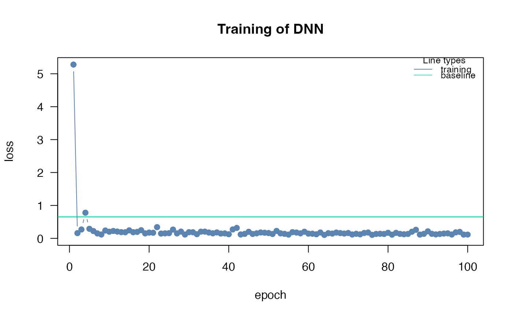

Print class citodnn
Arguments
- x
a model created by
dnn- ...
additional arguments
Examples
# \donttest{
if(torch::torch_is_installed()){
library(cito)
set.seed(222)
validation_set<- sample(c(1:nrow(datasets::iris)),25)
# Build and train Network
nn.fit<- dnn(Sepal.Length~., data = datasets::iris[-validation_set,])
# Structure of Neural Network
print(nn.fit)
}
#> Loss at epoch 1: 5.278974, lr: 0.01000

#> Loss at epoch 2: 0.158715, lr: 0.01000
#> Loss at epoch 3: 0.269647, lr: 0.01000
#> Loss at epoch 4: 0.779068, lr: 0.01000
#> Loss at epoch 5: 0.289808, lr: 0.01000
#> Loss at epoch 6: 0.222324, lr: 0.01000
#> Loss at epoch 7: 0.151073, lr: 0.01000
#> Loss at epoch 8: 0.117373, lr: 0.01000
#> Loss at epoch 9: 0.238467, lr: 0.01000
#> Loss at epoch 10: 0.202062, lr: 0.01000
#> Loss at epoch 11: 0.224059, lr: 0.01000
#> Loss at epoch 12: 0.206479, lr: 0.01000
#> Loss at epoch 13: 0.189062, lr: 0.01000
#> Loss at epoch 14: 0.185540, lr: 0.01000
#> Loss at epoch 15: 0.243190, lr: 0.01000
#> Loss at epoch 16: 0.186659, lr: 0.01000
#> Loss at epoch 17: 0.196315, lr: 0.01000
#> Loss at epoch 18: 0.247513, lr: 0.01000
#> Loss at epoch 19: 0.151229, lr: 0.01000
#> Loss at epoch 20: 0.174685, lr: 0.01000
#> Loss at epoch 21: 0.169453, lr: 0.01000
#> Loss at epoch 22: 0.340852, lr: 0.01000
#> Loss at epoch 23: 0.145830, lr: 0.01000
#> Loss at epoch 24: 0.152149, lr: 0.01000
#> Loss at epoch 25: 0.158516, lr: 0.01000
#> Loss at epoch 26: 0.266870, lr: 0.01000
#> Loss at epoch 27: 0.150408, lr: 0.01000
#> Loss at epoch 28: 0.205305, lr: 0.01000
#> Loss at epoch 29: 0.116375, lr: 0.01000
#> Loss at epoch 30: 0.187146, lr: 0.01000
#> Loss at epoch 31: 0.186225, lr: 0.01000
#> Loss at epoch 32: 0.126632, lr: 0.01000
#> Loss at epoch 33: 0.202935, lr: 0.01000
#> Loss at epoch 34: 0.204696, lr: 0.01000
#> Loss at epoch 35: 0.176747, lr: 0.01000
#> Loss at epoch 36: 0.154051, lr: 0.01000
#> Loss at epoch 37: 0.180174, lr: 0.01000
#> Loss at epoch 38: 0.146647, lr: 0.01000
#> Loss at epoch 39: 0.150837, lr: 0.01000
#> Loss at epoch 40: 0.125070, lr: 0.01000
#> Loss at epoch 41: 0.270700, lr: 0.01000
#> Loss at epoch 42: 0.317249, lr: 0.01000
#> Loss at epoch 43: 0.118350, lr: 0.01000
#> Loss at epoch 44: 0.135987, lr: 0.01000
#> Loss at epoch 45: 0.199000, lr: 0.01000
#> Loss at epoch 46: 0.133361, lr: 0.01000
#> Loss at epoch 47: 0.152125, lr: 0.01000
#> Loss at epoch 48: 0.178831, lr: 0.01000
#> Loss at epoch 49: 0.170733, lr: 0.01000
#> Loss at epoch 50: 0.161493, lr: 0.01000
#> Loss at epoch 51: 0.132676, lr: 0.01000
#> Loss at epoch 52: 0.225563, lr: 0.01000
#> Loss at epoch 53: 0.152056, lr: 0.01000
#> Loss at epoch 54: 0.137219, lr: 0.01000
#> Loss at epoch 55: 0.114539, lr: 0.01000
#> Loss at epoch 56: 0.188342, lr: 0.01000
#> Loss at epoch 57: 0.176558, lr: 0.01000
#> Loss at epoch 58: 0.152500, lr: 0.01000
#> Loss at epoch 59: 0.201627, lr: 0.01000
#> Loss at epoch 60: 0.144701, lr: 0.01000
#> Loss at epoch 61: 0.140941, lr: 0.01000
#> Loss at epoch 62: 0.123952, lr: 0.01000
#> Loss at epoch 63: 0.177994, lr: 0.01000
#> Loss at epoch 64: 0.104798, lr: 0.01000
#> Loss at epoch 65: 0.157376, lr: 0.01000
#> Loss at epoch 66: 0.145011, lr: 0.01000
#> Loss at epoch 67: 0.176440, lr: 0.01000
#> Loss at epoch 68: 0.160458, lr: 0.01000
#> Loss at epoch 69: 0.146109, lr: 0.01000
#> Loss at epoch 70: 0.162491, lr: 0.01000
#> Loss at epoch 71: 0.117895, lr: 0.01000
#> Loss at epoch 72: 0.138045, lr: 0.01000
#> Loss at epoch 73: 0.122764, lr: 0.01000
#> Loss at epoch 74: 0.163801, lr: 0.01000
#> Loss at epoch 75: 0.177276, lr: 0.01000
#> Loss at epoch 76: 0.105602, lr: 0.01000
#> Loss at epoch 77: 0.134098, lr: 0.01000
#> Loss at epoch 78: 0.139077, lr: 0.01000
#> Loss at epoch 79: 0.133710, lr: 0.01000
#> Loss at epoch 80: 0.169041, lr: 0.01000
#> Loss at epoch 81: 0.112363, lr: 0.01000
#> Loss at epoch 82: 0.167330, lr: 0.01000
#> Loss at epoch 83: 0.136177, lr: 0.01000
#> Loss at epoch 84: 0.124830, lr: 0.01000
#> Loss at epoch 85: 0.134358, lr: 0.01000
#> Loss at epoch 86: 0.201256, lr: 0.01000
#> Loss at epoch 87: 0.259660, lr: 0.01000
#> Loss at epoch 88: 0.114816, lr: 0.01000
#> Loss at epoch 89: 0.137144, lr: 0.01000
#> Loss at epoch 90: 0.213866, lr: 0.01000
#> Loss at epoch 91: 0.138192, lr: 0.01000
#> Loss at epoch 92: 0.120507, lr: 0.01000
#> Loss at epoch 93: 0.133130, lr: 0.01000
#> Loss at epoch 94: 0.145151, lr: 0.01000
#> Loss at epoch 95: 0.152801, lr: 0.01000
#> Loss at epoch 96: 0.117208, lr: 0.01000
#> Loss at epoch 97: 0.181819, lr: 0.01000
#> Loss at epoch 98: 0.196254, lr: 0.01000
#> Loss at epoch 99: 0.114589, lr: 0.01000
#> Loss at epoch 100: 0.115140, lr: 0.01000
#> dnn(formula = Sepal.Length ~ Sepal.Width + Petal.Length + Petal.Width +
#> Species, data = datasets::iris[-validation_set, ])
#> An `nn_module` containing 2,901 parameters.
#>
#> ── Modules ─────────────────────────────────────────────────────────────────────
#> • 0: <nn_linear> #300 parameters
#> • 1: <nn_selu> #0 parameters
#> • 2: <nn_linear> #2,550 parameters
#> • 3: <nn_selu> #0 parameters
#> • 4: <nn_linear> #51 parameters
# }